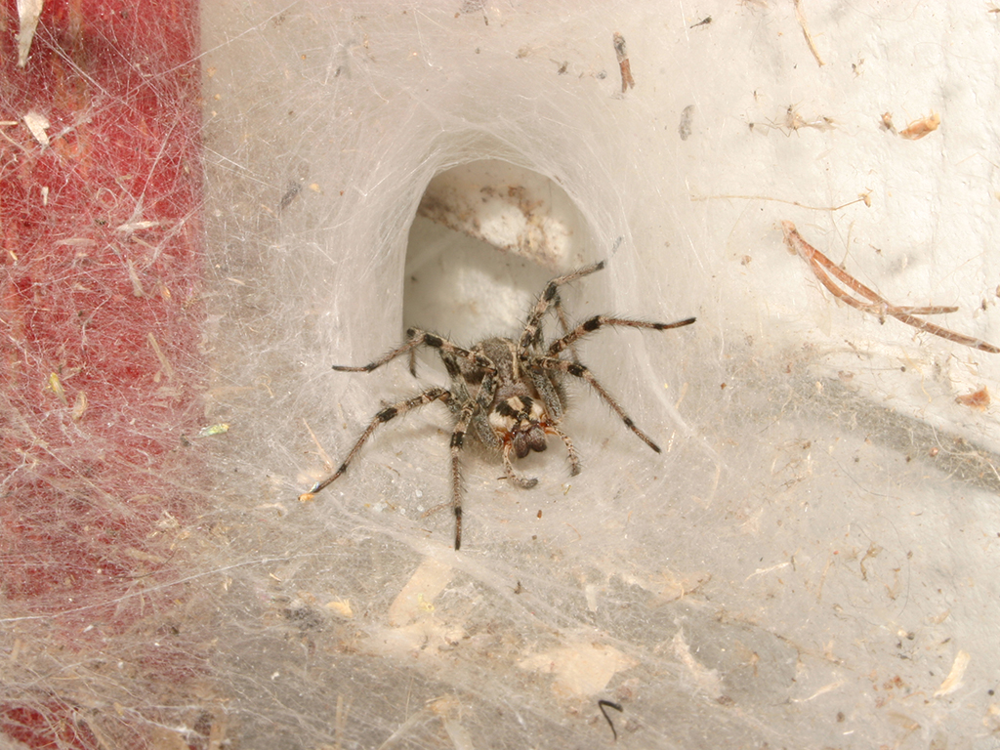
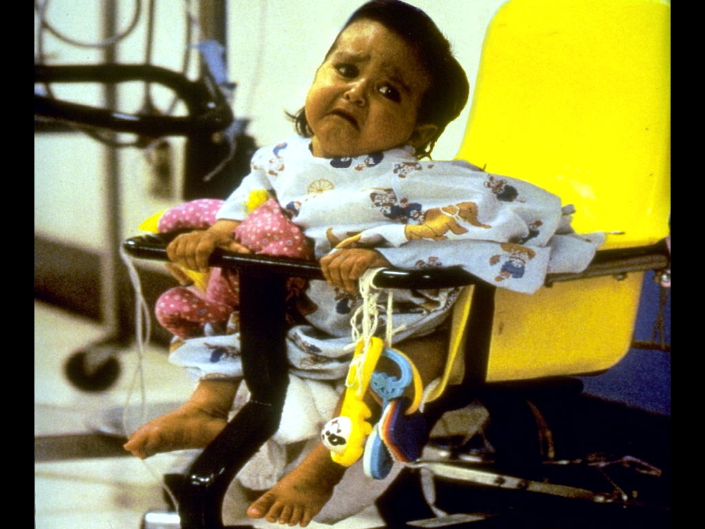

<!-- 
	Reappraisal Task Script

	Liz Song, <lizsong@stanford.edu>
	May, 2021
-->

<!DOCTYPE html>
<html>
  <head>
    <title>Reappraisal Script</title>
    <script src="jspsych-6.3.1/jspsych.js"></script>
    <script src="jspsych-6.3.1/plugins/jspsych-html-keyboard-response.js"></script>
    <script src="jspsych-6.3.1/plugins/jspsych-image-keyboard-response.js"></script>
    <script src="jspsych-6.3.1/plugins/jspsych-preload.js"></script>
    <script src="jspsych-6.3.1/plugins/jspsych-survey-likert.js"></script>
    <script src="jspsych-6.3.1/plugins/jspsych-survey-text.js"></script>
    <script src="jspsych-6.3.1/plugins/jspsych-instructions.js"></script>
    <link
      href="jspsych-6.3.1/css/jspsych.css"
      rel="stylesheet"
      type="text/css"
    />
  </head>
  <body></body>

  <script type="text/javascript" src="imgReapp.js"></script>
  <script>
    /**
     * Shuffles array in place. Based on Fisher-Yates Shuffle Algorithm
     * https://stackoverflow.com/questions/6274339/how-can-i-shuffle-an-array
     *
     * @param {Array} a items An array containing the items.
     */
    function shuffle(a) {
      var j, x, i;
      for (i = a.length - 1; i > 0; i--) {
        j = Math.floor(Math.random() * (i + 1));
        x = a[i];
        a[i] = a[j];
        a[j] = x;
      }
      return a;
    }

    function sample_random_indices(len, min_index, max_index) {
      subarray = [];
      while (subarray.length != len) {
        var i = Math.floor(Math.random() * (max_index - min_index)) + min_index;
        while (subarray.includes(i)) {
          i = Math.floor(Math.random() * (max_index - min_index)) + min_index;
        }
        subarray.push(i);
      }
      return subarray;
    }

    //  INITIALIZATION
    /* read JSON files for low and high intensity images (note: not technically a JSON file) */
    var jsonObj_low = JSON.parse(reapp_low);
    var jsonObj_high = JSON.parse(reapp_high);

    /* create timeline */
    var timeline = [];

    /* isolate image names from JSON file into arrays to preload */
    var imgName_low = [];
    var imgName_high = [];
    jsonObj_low.forEach(function (entry) {
      imgName_low.push(entry.img);
    });
    jsonObj_high.forEach(function (entry) {
      imgName_high.push(entry.img);
    });

    var preload = {
      type: "preload",
      images: imgName_low.concat(imgName_high),
    };
    timeline.push(preload);

    /* shuffles low and high intensity image arrays and partitions out 15 from each array into three blocks */
    var img_low = shuffle(jsonObj_low);
    var img_high = shuffle(jsonObj_high);

    var block1 = [];
    var block2 = [];
    var block3 = [];

    var block1_ac_indices = sample_random_indices(3, 0, 15);
    console.log(block1_ac_indices);
    var block2_ac_indices = sample_random_indices(3, 15, 30);
    var block_3_ac_indices = sample_random_indices(3, 30, 45);

    for (i = 0; i < 45; i++) {
      image_low = img_low[i];
      console.log(img_low[i]);
      image_high = img_high[i];
      if (i < 15) {
        if (block1_ac_indices.includes(i)) {
          image_low.AC = true;
          image_high.AC = true;
          block1.push(image_low);
          block1.push(image_high);
        } else {
          image_low.AC = false;
          image_high.AC = false;
          block1.push(image_low);
          block1.push(image_high);
        }
      } else if (i >= 15 && i < 30) {
        if (block2_ac_indices.includes(i)) {
          image_low.AC = true;
          image_high.AC = true;
          block2.push(image_low);
          block2.push(image_high);
        } else {
          image_low.AC = false;
          image_high.AC = false;
          block2.push(image_low);
          block2.push(image_high);
        }
      } else if (i >= 30) {
        if (block_3_ac_indices.includes(i)) {
          image_low.AC = true;
          image_high.AC = true;
          block3.push(image_low);
          block3.push(image_high);
        } else {
          image_low.AC = false;
          image_high.AC = false;
          block3.push(image_low);
          block3.push(image_high);
        }
      }
    }
    block1 = shuffle(block1);
    block2 = shuffle(block2);
    block3 = shuffle(block3);

    /* constant for self-gen or given reappraisal for between-subject questions */
    const rethinkPath = jsPsych.randomization.sampleWithReplacement(
      [0, 1],
      1
    )[0];

    /* constant for attend/rethink self-gen/rethink given conditions. 0 = attend; 1 = rethink given; 2 = rethink self-gen */
    var path = -1;

    //  INTRO TO STUDY
    /* define welcome message trial */
    var welcome = {
      type: "html-keyboard-response",
      stimulus:
        "Thank you very much for participating in this study. Please make sure your responses are as thorough and authentic as possible. Press any key on the keyboard to begin.",
    };
    timeline.push(welcome);

    //  TRAINING RETHINKING
    /* define rethinking explanation trial */
    var trainRethink = {
      type: "instructions",
      pages: [
        "In this study, you will view negative emotional images. In some cases, you will use an emotion regulation strategy called reappraisal to try to change your emotional response.",
        "To reappraise an emotional image, think about the situation in a different way to reduce the amount of negative emotion or increase the amount of positive emotion you may feel.",
        "Click next to move on to see a few example images and example reappraisals.",
        `</img> <p>You might see this image and feel a negative emotion such as sadness because the person looks depressed. You could reappraise the situation to feel less sad by instead thinking that the person is just resting because they are tired, and they will feel better soon.<p>`,
        `</img> <p>For another example, this image might spark fear if you are afraid of spiders. To reappraise the situation, you might think, 'this spider is very far away from me and cannot hurt me'.`,
        "Now, you will try reappraising an image yourself. Click next to see the image.",
        "</img>",
        "How could you think about this situation in a way that would reduce the amount of negative emotion or increase the amount of positive emotion you feel?",
      ],
      show_clickable_nav: true,
    };
    timeline.push(trainRethink);

    //  EXPLAINING TRIAL STRUCTURE
    /* define explaining study structure trial */
    var explain = {
      type: "instructions",
      pages: [
        "<p>Now we will give you the instructions for the trials in this task.<p>",
        "<p>There are two types of trials in this task: attend and reappraise.<p>",
        "<p>You will first be shown an image for 1 second as a preview. Then you will be given 10 seconds to either attend to or reappraise the image. Finally, you will be shown the initial image again for 8 seconds.<p>",
        "<p>In an attend trial, observe the image passively without trying to change your thinking.<p>",
        function () {
          // between subject case: if 0, user is given appraisal; if 1, user thinks of their own
          if (rethinkPath == 0) {
            return "<p>In a reappraisal trial, please read the given appraisal. Try to adopt that new perspective when looking at the image for the second time to make yourself feel less negative emotion or more positive emotion.<p>";
          } else {
            return "<p>In a reappraisal trial, please create your own reappraisal. Try to adopt that new perspective when looking at the image for the second time to make yourself feel less negative emotion or more positive emotion.<p>";
          }
        },
        "<p>You will be asked to rank your negative and positive emotions after each image.<p>",
        "<p>For a few images, you will also be asked to write down what you thought about.<p>",
        "<p>Click next to see a few example trials.<p>",
      ],
      show_clickable_nav: true,
    };
    timeline.push(explain);

    var step3_attend = {
      type: "html-keyboard-response",
      stimulus: function () {
        path = 0;
        return "<b style='font-size: 5vw;'>Attend</b>";
      },
      choices: jsPsych.NO_KEYS,
      trial_duration: 10000,
    };

    var step3_rethink = {
      type: "html-keyboard-response",
      stimulus: function () {
        // between subject case: if 0, user is given appraisal; if 1, user thinks of their own
        if (rethinkPath == 0) {
          path = 1;
          return (
            `<b style='font-size: 3.5vw;'>Reappraisal: <br></b>
                ` +
            "<p style='font-size: 2vw;'>" +
            jsPsych.timelineVariable("reappraisal") +
            "</p>"
          );
        } else {
          path = 2;
          return "<p style='font-size: 4vw;'> Think of your own reapprasial </p>";
        }
      },
      choices: jsPsych.NO_KEYS,
      trial_duration: 10000,
    };

    var rethink = {
      type: "survey-text",
      questions: [
        {
          prompt:
            "write down an interpretation of the image that would make you feel less bad.",
          rows: 5,
          columns: 40,
        },
      ],
    };

    var attention_check = {
      type: "survey-text",
      questions: [
        {
          prompt: "What did you think about when you were viewing the picture?",
          rows: 5,
          columns: 40,
        },
      ],
    };

    //  TEST TRIALS SETUP
    /* step 1: ask user to click to preview image */
    var step1 = {
      type: "html-keyboard-response",
      stimulus:
        "<p style='font-size: 3vw'>Press any key on the keyboard to preview the image</p>",
    };

    /* step 2: preview image for 1 second */
    var step2 = {
      on_start: function (trial) {
        trial.stimulus =
          "</img>";
      },
      type: "html-keyboard-response",
      stimulus: "",
      choices: jsPsych.NO_KEYS,
      trial_duration: 1000,
    };

    /* step 3: have user attend or rethink the image */
    var step3 = {
      type: "html-keyboard-response",
      stimulus: function () {
        // within subject case: if 0, user attends; if 1, user rethinks
        if (jsPsych.randomization.sampleWithReplacement([0, 1], 1)[0] == 0) {
          path = 0;
          return "<b style='font-size: 5vw;'>Attend</b>";
        } else {
          // between subject case: if 0, user is given appraisal; if 1, user thinks of their own
          if (rethinkPath == 0) {
            path = 1;
            return (
              `<b style='font-size: 3.5vw;'>Reappraisal: <br></b>
                ` +
              "<p style='font-size: 2vw;'>" +
              jsPsych.timelineVariable("reappraisal") +
              "</p>"
            );
          } else {
            path = 2;
            return "<p style='font-size: 4vw;'> Think of your own reapprasial </p>";
          }
        }
      },
      choices: jsPsych.NO_KEYS,
      trial_duration: 10000,
    };

    /* step 4: view image for eight seconds */
    var step4 = {
      on_start: function (trial) {
        trial.stimulus =
          "</img>";
      },
      type: "html-keyboard-response",
      stimulus: "",
      choices: jsPsych.NO_KEYS,
      trial_duration: 8000,
    };

    /* step 5: have user rate their negative and positive emotions */
    var scale_pos = [
      "Not at all positive",
      "Slightly positive",
      "Moderately positive",
      "Very positive",
      "Extremely positive",
    ];

    var scale_neg = [
      "Not at all negative",
      "Slightly negative",
      "Moderately negative",
      "Very negative",
      "Extremely negative",
    ];

    var step5 = {
      type: "survey-likert",
      questions: [
        {
          prompt: "How positive do you feel in response to this picture?",
          name: "positive",
          labels: scale_pos,
          required: true,
        },
        {
          prompt: "How negative do you feel in response to this picture?",
          name: "negative",
          labels: scale_neg,
          required: true,
        },
      ],
      randomize_question_order: false,
      on_finish: function (data) {
        data.img = jsPsych.timelineVariable("img");
        if (path == 0) {
          data.path = "Attend";
        } else if (path == 1) {
          data.path = "Rethink given";
        } else if (path == 2) {
          data.path = "Rethink self-gen";
        }
      },
    };

    attention_check_conditional_node = {
      timeline: [attention_check],
      conditional_function() {
        if (jsPsych.timelineVariable("AC")) {
          return true;
        } else {
          return false;
        }
      },
    };

    //  RUNNING EXPLANATION OF TRIAL STRUCTURE TIMELINE (FROM INTRODUCTION SETUP)
    /* explain trial structure timeline; attend */
    var trial_structure_attend = {
      timeline: [step1, step2, step3_attend, step4, step5, attention_check],
      timeline_variables: [
        {
          img: "img/2346.jpg",
          reappraisal:
            "The women are playing in the waterfall; they're not in any danger.",
        },
        {
          img: "img/2751.jpg",
          reappraisal:
            "The man is just drinking a soda, not an alcoholic beverage, so he's safe to drive.",
        },
      ],
    };
    timeline.push(trial_structure_attend);

    /* explain trial structure timeline; rethink */
    var trial_structure_rethink = {
      timeline: [step1, step2, step3_rethink, step4, step5, attention_check],
      timeline_variables: [
        {
          img: "img/2346.jpg",
          reappraisal:
            "The women are playing in the waterfall; they're not in any danger.",
        },
        {
          img: "img/2751.jpg",
          reappraisal:
            "The man is just drinking a soda, not an alcoholic beverage, so he's safe to drive.",
        },
      ],
    };
    timeline.push(trial_structure_rethink);

    //  RUNNING EXPERIMENT TIMELINE
    var begin_experiment = {
      type: "html-keyboard-response",
      stimulus:
        "Now we will start the first of three blocks of the study. You will see several images in each block. Please be as thoughtful and attentive as possible in your responses. Press any key on the keyboard to begin.",
    };
    timeline.push(begin_experiment);

    /* repeat test trials for block 1 of images */
    var test_procedure1 = {
      timeline: [
        step1,
        step2,
        step3,
        step4,
        step5,
        attention_check_conditional_node,
      ],
      timeline_variables: block1,
    };
    timeline.push(test_procedure1);

    var break1 = {
      type: "instructions",
      pages: [
        "We have now finished Block 1. Click next to continue to Block 2.",
      ],
      show_clickable_nav: true,
    };
    timeline.push(break1);

    /* repeat test trials for block 2 of images */
    var test_procedure2 = {
      timeline: [
        step1,
        step2,
        step3,
        step4,
        step5,
        attention_check_conditional_node,
      ],
      timeline_variables: block2,
    };
    timeline.push(test_procedure2);

    var break2 = {
      type: "instructions",
      pages: [
        "We have now finished Block 2. We really appreciate your continued attention. In order for the researchers to benefit from your time and effort, it is important that you continue to provide thorough and authentic responses in this part of the study. Click next to continue to the last section of the study, Block 3.",
      ],
      show_clickable_nav: true,
    };
    timeline.push(break2);

    /* repeat test trials for block 3 of images */
    var test_procedure3 = {
      timeline: [
        step1,
        step2,
        step3,
        step4,
        step5,
        attention_check_conditional_node,
      ],
      timeline_variables: block3,
    };
    timeline.push(test_procedure3);

    var break3 = {
      type: "instructions",
      pages: [
        "We have now finished Block 3. Thank you for your participation.",
      ],
      show_clickable_nav: true,
    };
    timeline.push(break3);

    //  START EXPERIMENT
    /* start the experiment */
    jsPsych.init({
      timeline: timeline,
      override_safe_mode: false,
      on_finish: function () {
        /* // directing participants to different sites based on url parameter 
        const route = jsPsych.data.getURLVariable("route");
        if (route == 'X'){
          window.location.replace('url1');
        }
        else if (route == 'Y'){
          window.location.replace('url2');
        }*/
      },
    });
  </script>
</html>
